data = pd.read_csv(ruta)
print(data.shape)El dataset contiene 45.215 registros y 17 columnas.
data.head()
data.info()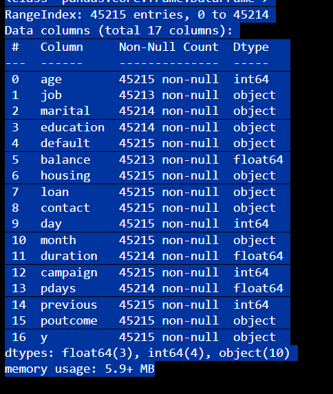
data.dropna(inplace=True)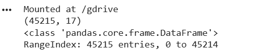
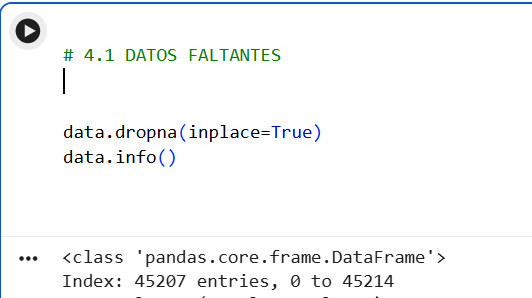
for col in cols_cat:
print(data[col].nunique())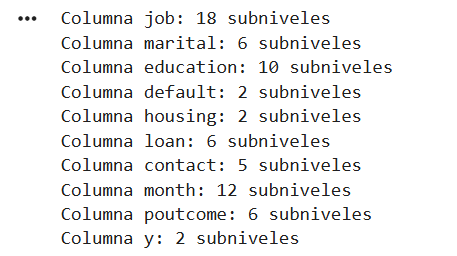
data.describe()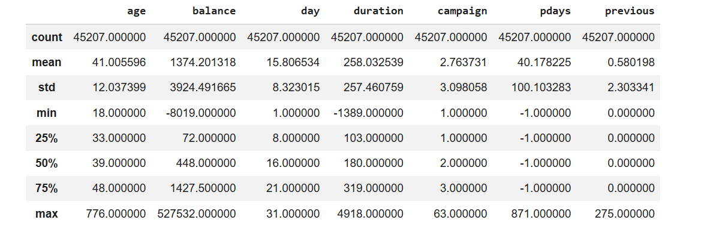
data.drop_duplicates(inplace=True)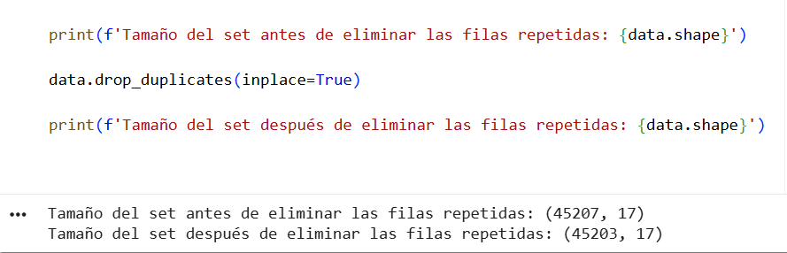
sns.boxplot(...)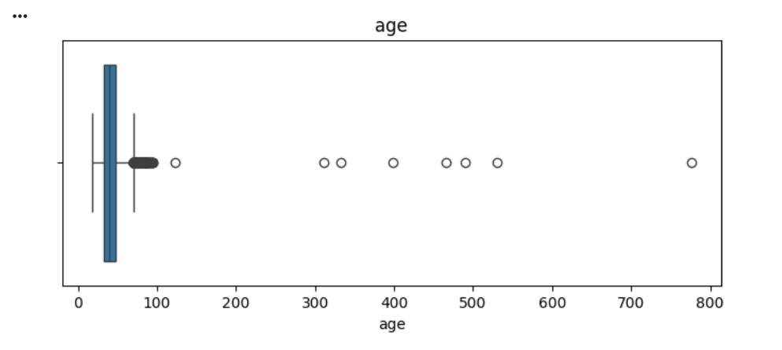
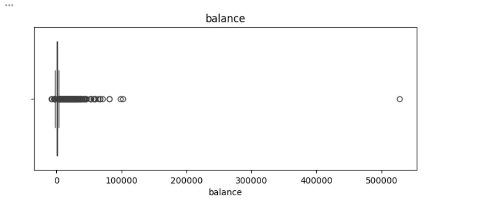
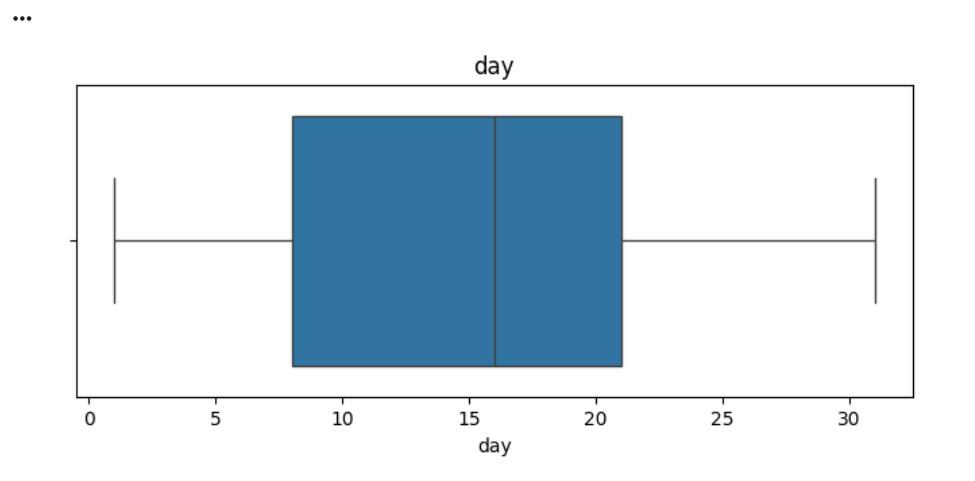
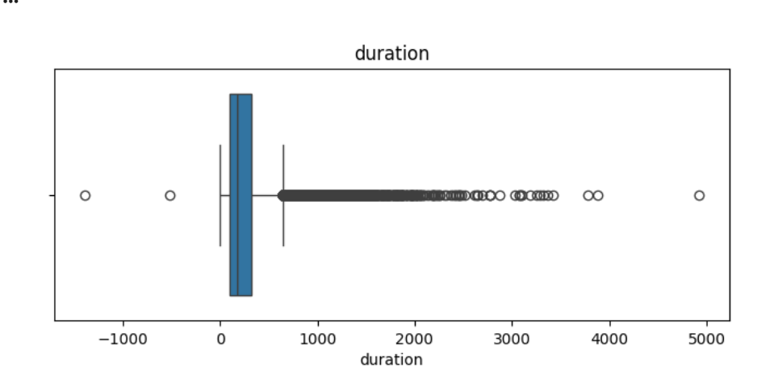
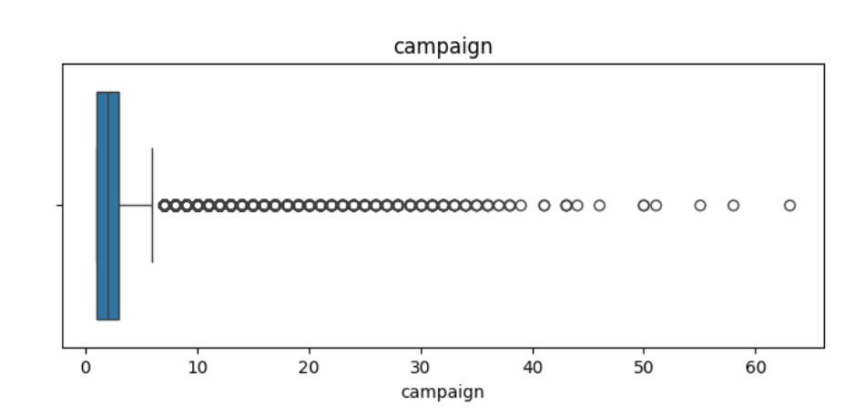
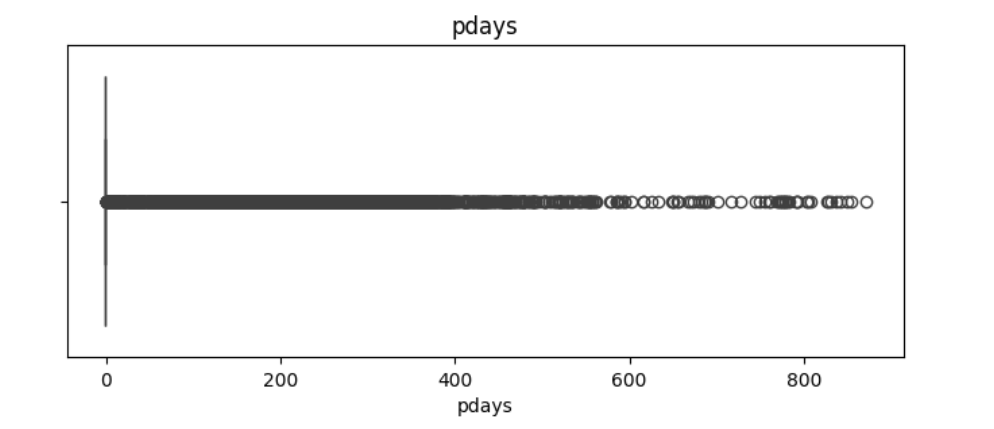
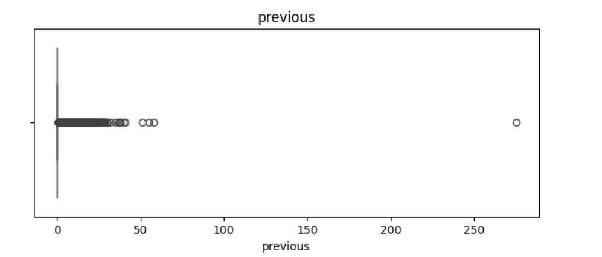
data = data[data['age'] <= 100]
data = data[data['duration'] > 0]
data = data[data['previous'] <= 100]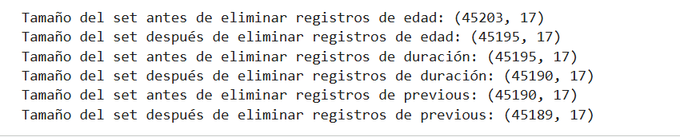
data[column] = data[column].str.lower()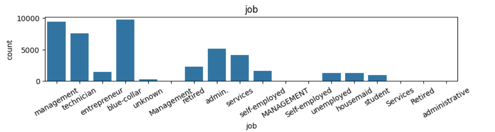
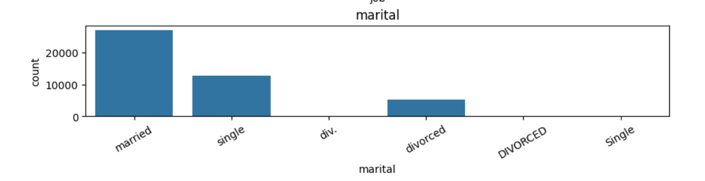
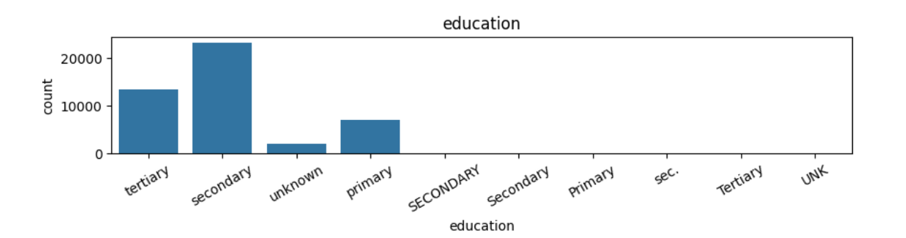
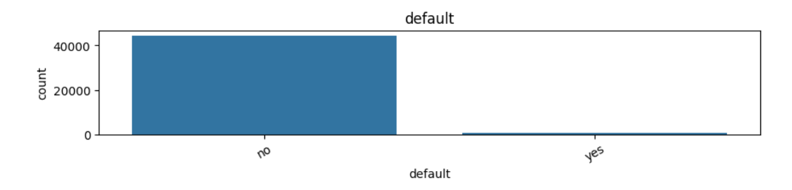
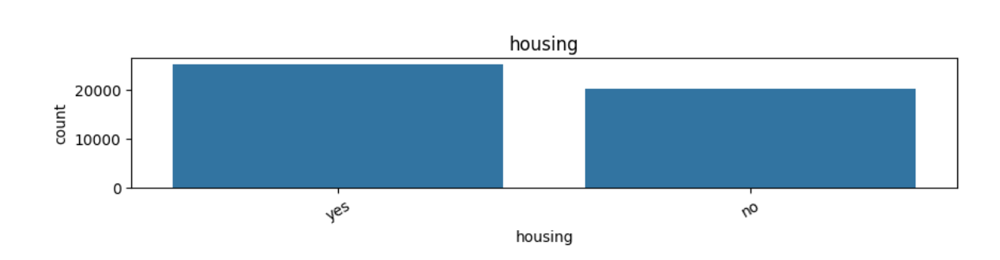
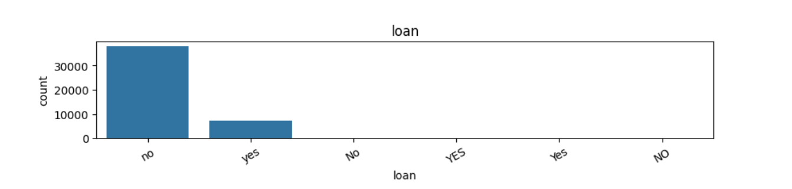
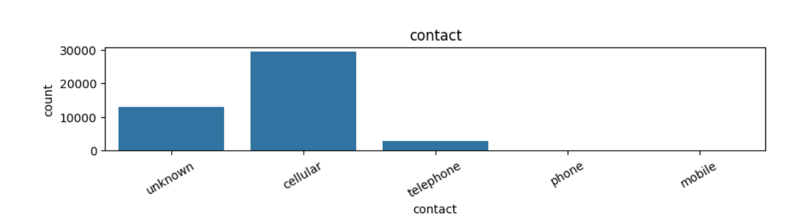
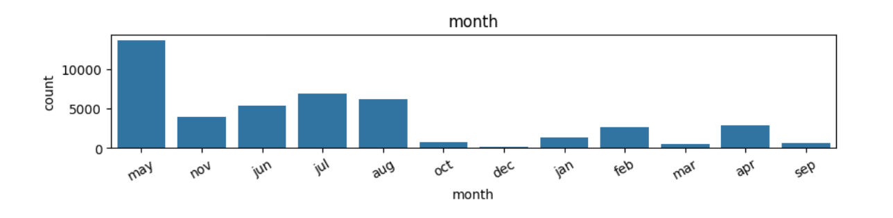
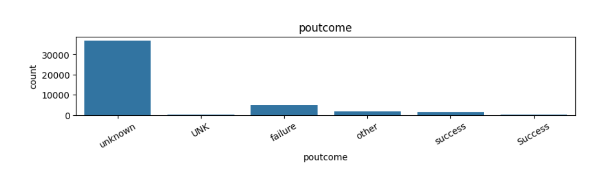
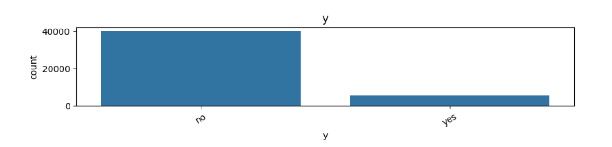
actualizado
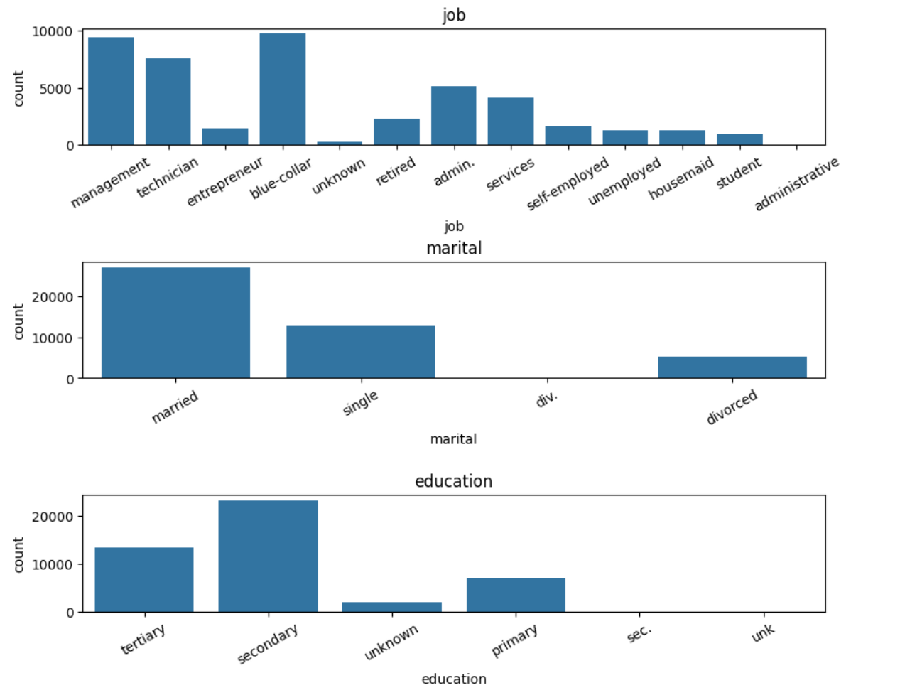
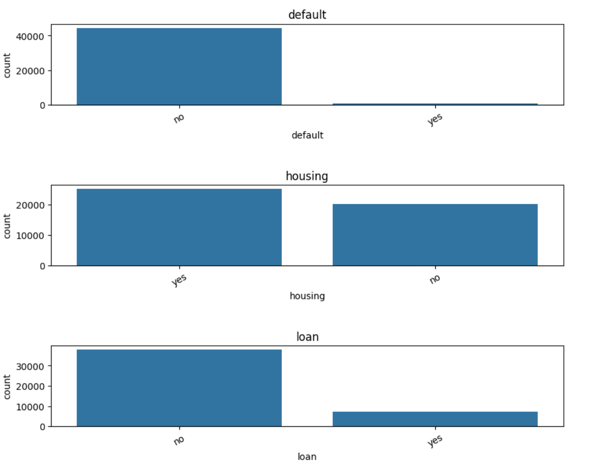
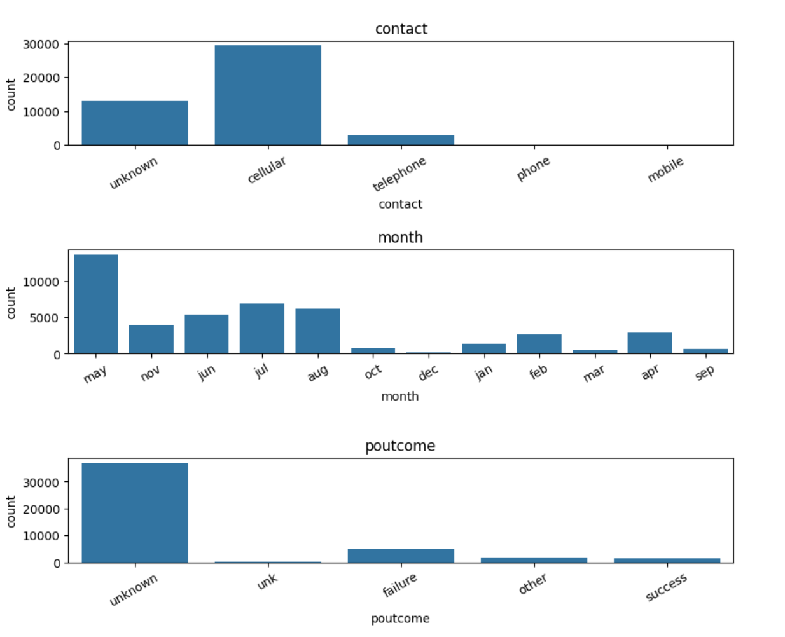
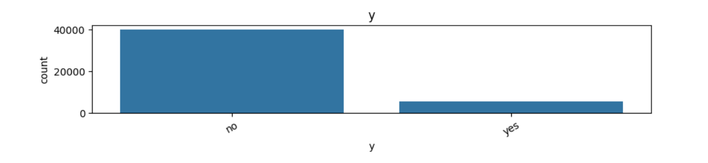
data['job'] = data['job'].str.replace('admin.','administrative')
data.loc[data['education']=='unk','education']='unknown'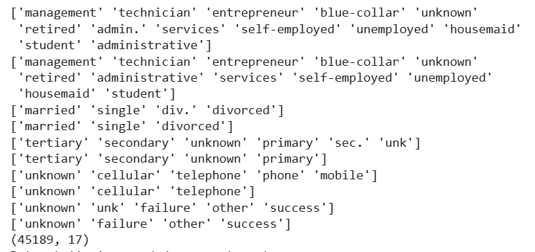
print(data.shape)Se eliminaron datos faltantes, registros duplicados, valores atípicos y errores tipográficos. El dataset quedó listo para el análisis exploratorio de datos.